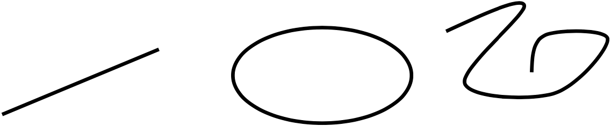
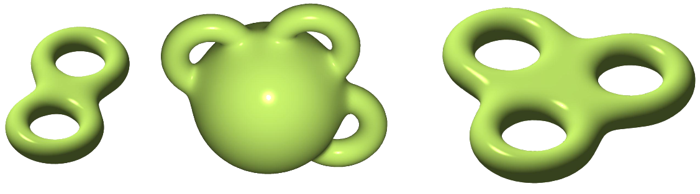
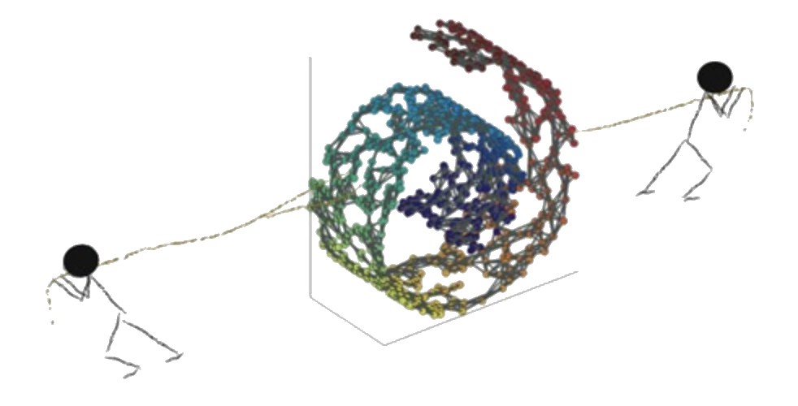
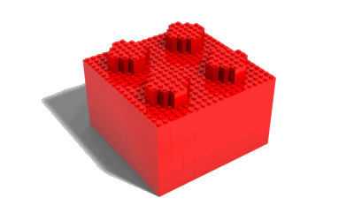
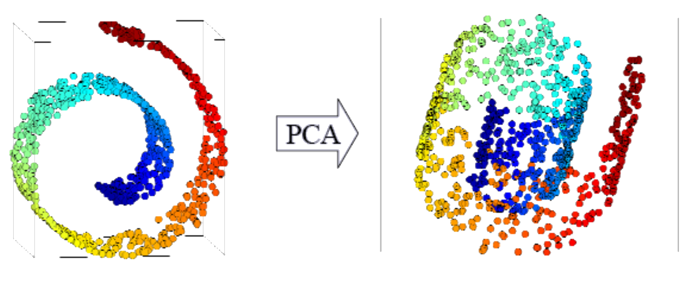
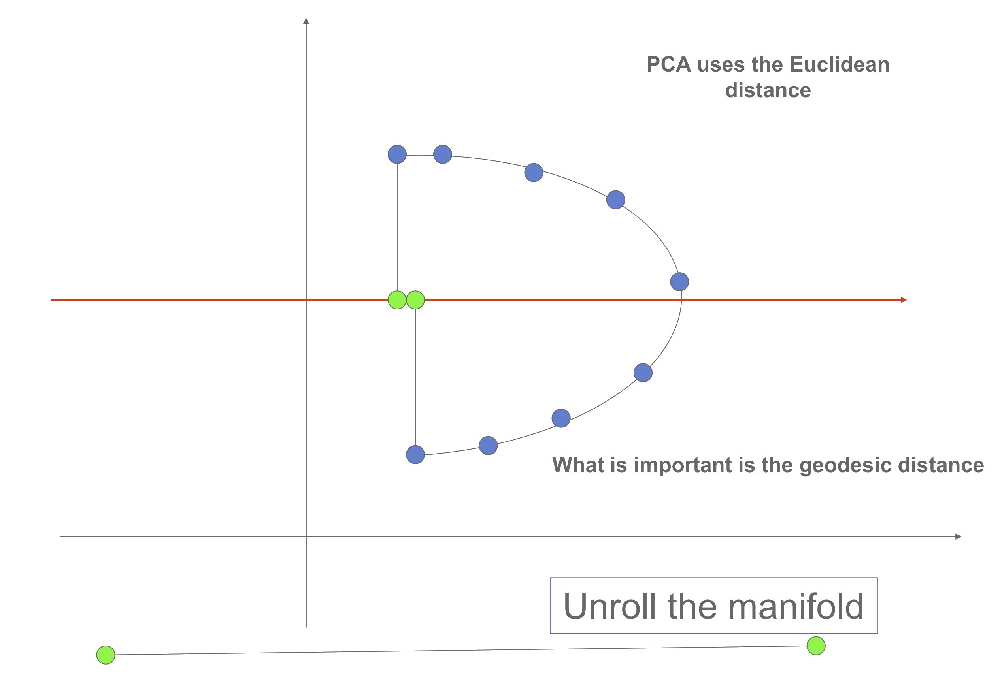
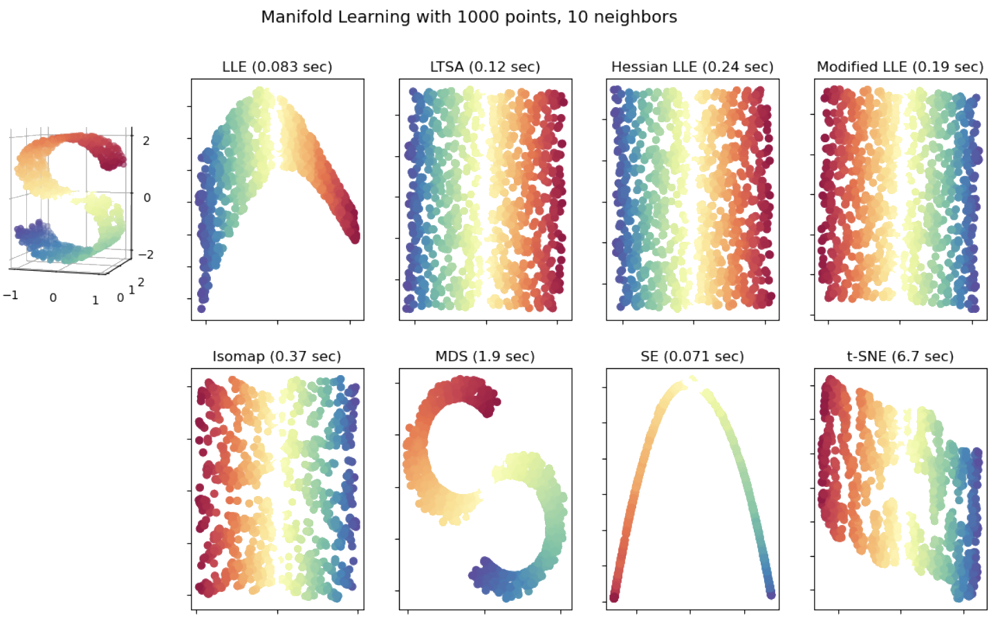

Advanced Machine Learning
19: Manifold Learning
Outline for the lecture
- Motivation
- Multidimensional Scaling
- LLE
- IsoMap
- t-SNE
- Random Projections
Data is inherently low dimensional
Exploratory data analysis
- Find hidden low dimensional structure in the data
- Low dimensional representation for visualization
Manifolds
Informally: any object nearly flat on small scales


Manifold learning Algorithms
- PCA (1901)
- Multi-dimensional Scaling (1952)
- Sammon mapping (1969)
- Maximum Variance Unfolding
- Locally Linear Embedding (2000)
- Isomap (2000)
- Laplacian Eigenmaps (2003)
- t-distributed Stochastic Neighbor Embedding (tSNE)
- Random Projections
- many more
Let's see how they work

Under construction starting here

But why not PCA?

PCA is linear and cannot find nonlinear structure
PCA Linearity

PCA is linear and cannot find nonlinear structure
Multidimensional Scaling: objective
$$
{\cal J} = \underset{i\ne j}{\sum} (d_{ij} - \|z_i - z_j\|)^2
$$
Algorithms compared on Swiss Roll
